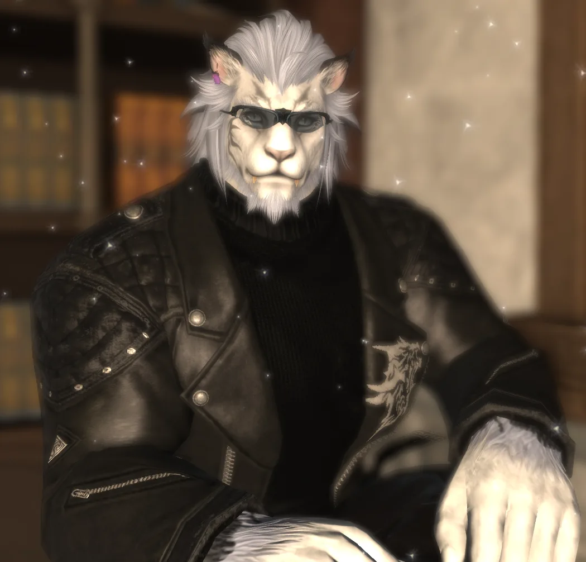
STAFF 01
里萊
性格沉穩卻待人熱情的男硌獅，來自圖拉爾大陸，也是當地數一數二強大的戰士。據說老闆當初為了把這位實力與氣度兼具的猛者請進店裡，可是下了不少本錢。
認識在松你去鼠迎接每一位來客的店內夥伴。點選照片下方的小圖，可切換查看不同造型。
角色照片僅供參考，實際造型請以現場為主。

性格沉穩卻待人熱情的男硌獅，來自圖拉爾大陸，也是當地數一數二強大的戰士。據說老闆當初為了把這位實力與氣度兼具的猛者請進店裡，可是下了不少本錢。
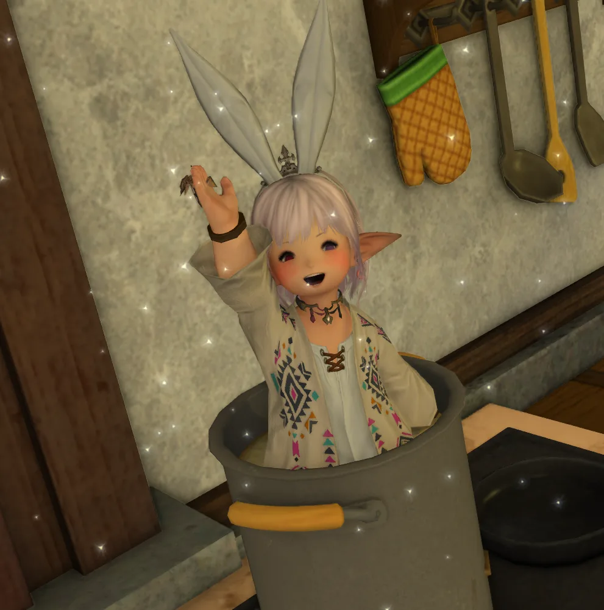
原本與仙人掌先生一同生活的拉拉菲爾，卻在某天決定離開熟悉日常，踏上探索世界的旅程。如今暫時停留在松鼠先生的餐廳裡工作，也把一路見聞與好奇心帶進了店內每一天。
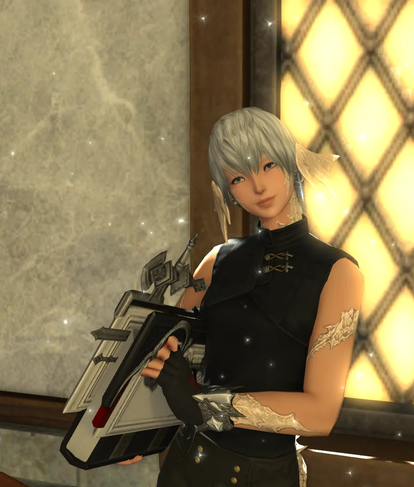
原先是在奧薩德次大陸故鄉裡過著悠哉日子的敖龍族，卻被好友里萊硬生生拽出家門，從此在艾奧傑亞展開冒險。後來在好友受聘加入時，也一同來到松你去鼠，成了店內不可或缺的一員。
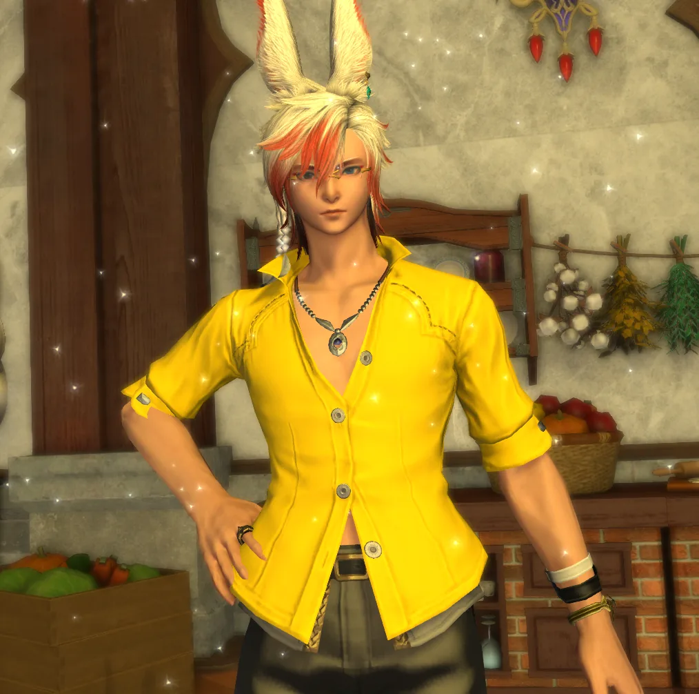
活躍於艾奧傑亞各地的男維埃拉族冒險者，平日最大的興趣就是挖寶與尋酒，總是一邊旅行、一邊追尋那些散落於各個大陸的傳說美酒。
比起正兒八經的科學品鑑方式，他更相信親口喝下去的那一瞬間，因此常常不管來歷便直接開瓶豪飲。也因為這份近乎執著的熱愛，他不只時常喝到來路不明的假酒，還鬧出把自己喝到連種族都會改變的荒謬傳聞。
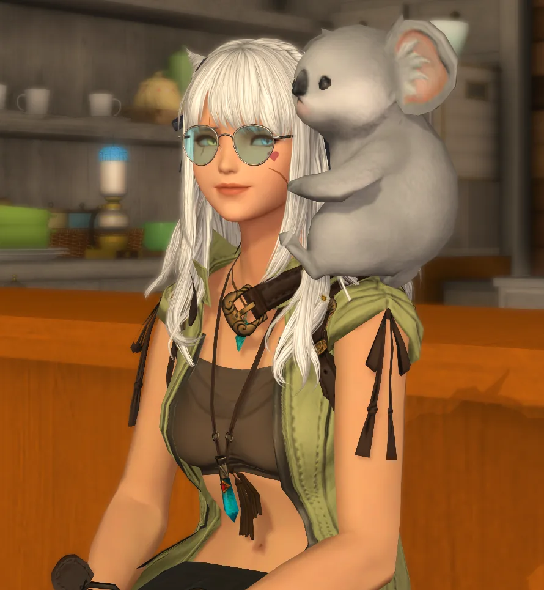
為了在艾奧傑亞開出一間最棒的餐廳，踏上了尋找夥伴與理想據點的旅程，最終被白銀鄉的風景與人情深深吸引，決定在此落腳，開始自己的餐廳夢。
原本是名身材壯碩的魯加族，卻因為誤喝了員工偷偷端來的假酒，一覺醒來莫名其妙變成了貓魅族，至今仍找不到變回去的方法。
如今每天除了煩惱餐廳大小事，最大的課題就是——
到底該怎麼增加店內營收，才能繼續養活這群越來越多的員工？
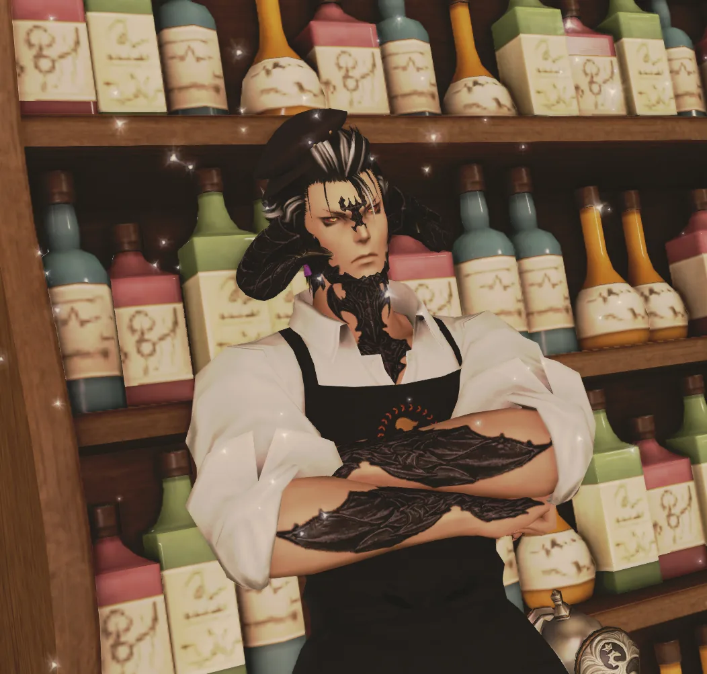
活躍於艾歐澤亞各地的男敖龍族，平日最大的興趣就是用角測試各地旅店門框的硬度。對「頭鐵」抱持近乎執著的熱愛，也讓他總是一邊旅行，一邊研究不會在坐下時把自己插在椅子上的尾巴擺放角度，以及如何在不毀掉頭盔的前提下，把那兩根該死的角塞進去。
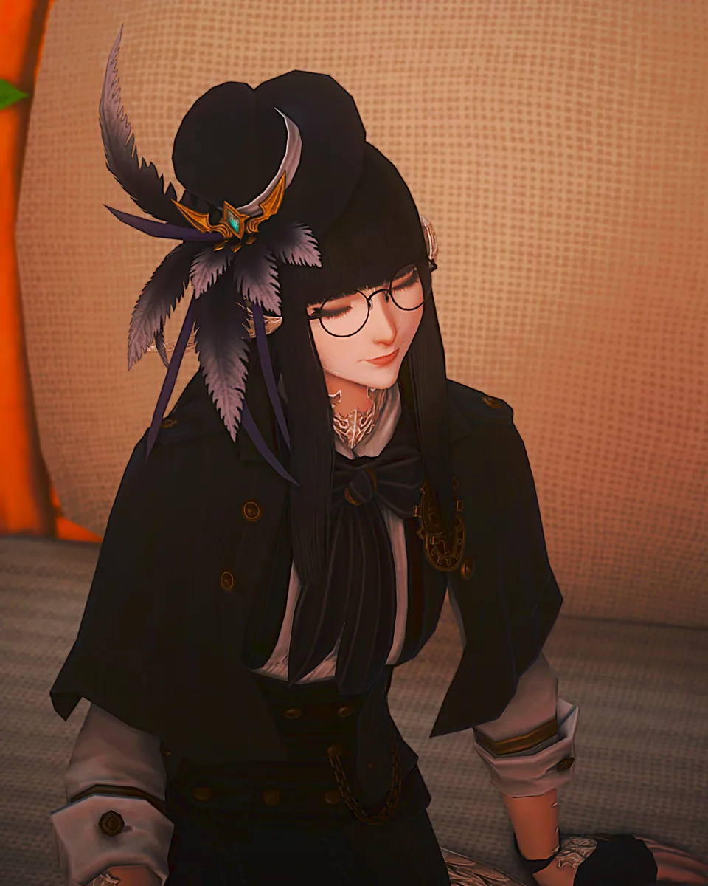
熱愛戰鬥的敖龍族女性，向來將決鬥視作證明實力與意志的方式。據說她曾在競技場上被一位來歷不明的同族女性一球拍昏，自此把那場敗北當成無法放下的執念。
最近聽聞那名對手疑似出現在松你去鼠工作後，她便打算潛入店內，一邊尋找機會，一邊等待再戰一回的時刻。
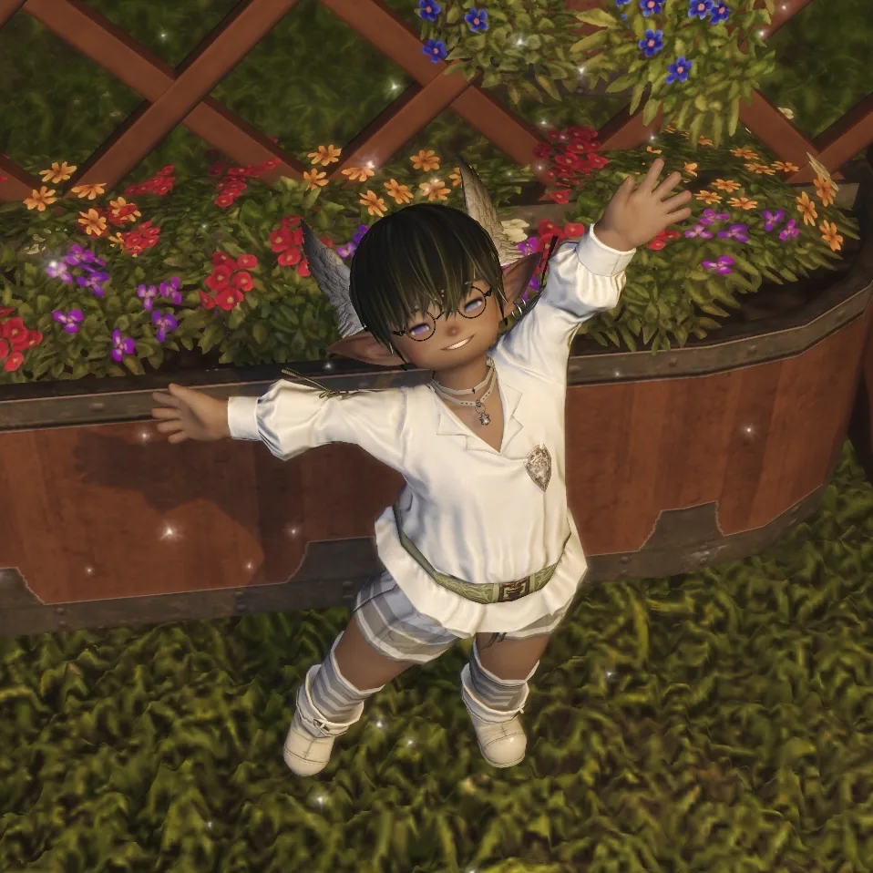
在各地發放結緣品的拉拉菲爾教主，因被黑心藥草上游欺騙而瀕臨破產，因緣際會下來到了松你去鼠餐廳打工，在這邊一邊賺錢，一邊開心的和客人們分享藥草的秘密。
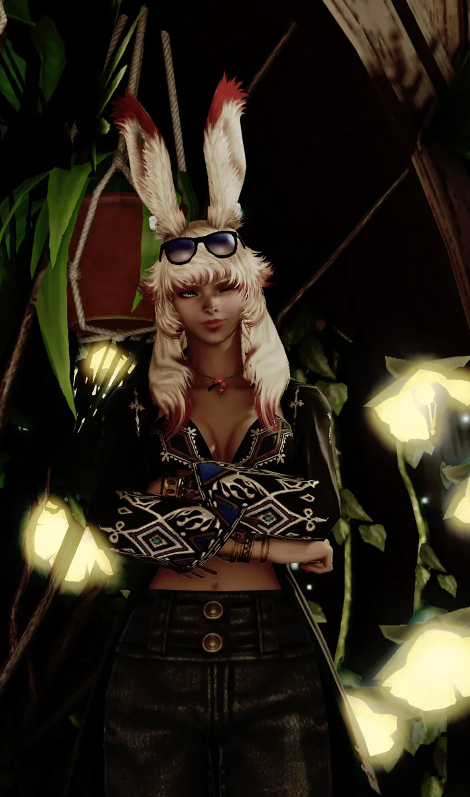
曾為葛爾摩大密林的守護者，後來背負傳承火焰的使命，毅然選擇離鄉踏上了冒險。
當旅途告一段落後，她並未馬上投身新的旅行，一次偶然中被店裡溫暖而熱鬧的氛圍深深吸引，也讓久經風霜的她，萌生了停下腳步的念頭。
因緣際會下，她於一間酒吧結識了店長，並主動向店長毛遂自薦，成為店裡不可或缺的夥伴。
從那天起，她始終帶著旅途中養成的禮儀與信念，默默將那份守護他人的心意，化作無微不至的服務，迎接每一位來訪的客人。
被店內獅子撿回來的小馬鈴薯。
雖然有些天然呆，但對每位客人都十分熱情；尤其遇見大姊姊客人時，總會忍不住露出燦爛笑容，興奮地上前迎接，成為店裡最活潑的小幫手。
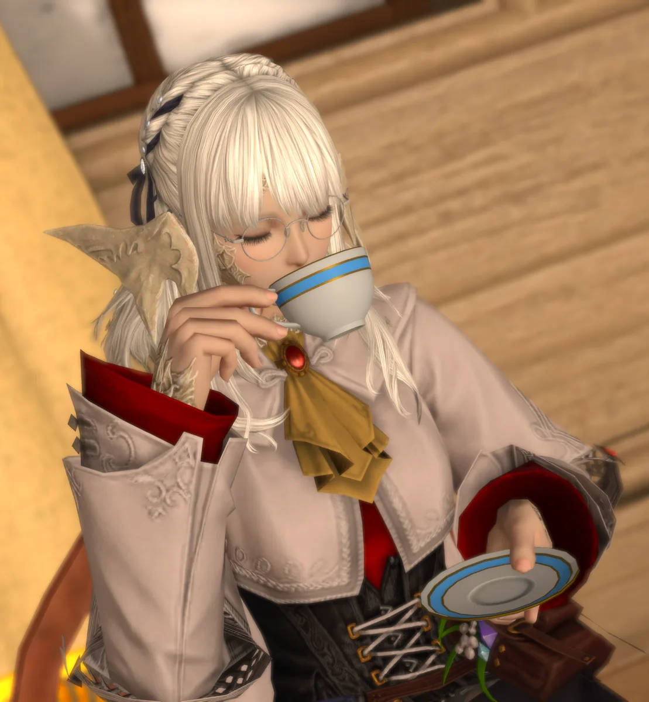
為了追隨愛人而遠赴他鄉的女敖龍族，喜歡熱鬧的地方，安靜的在旁邊聽故事。只要聽到哪裡有新鮮事，都會忍不住湊過去聽。
與愛人旅行的途中來到了店內，並被店內氛圍深深吸引。
在與老闆達成共識後，決定與愛人一同留在店內駐點，聽取來自不同人的有趣故事。
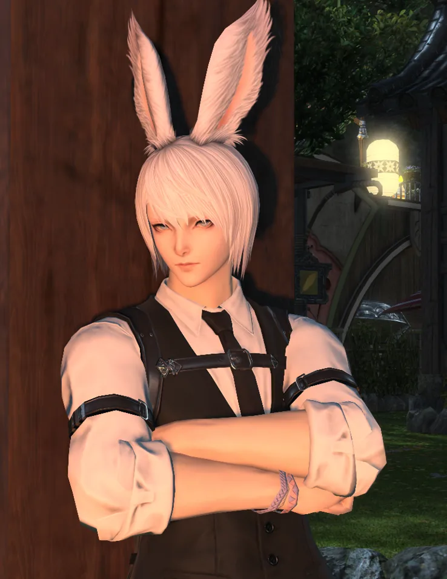
從沙都長椅來的男性維埃拉族，總能看見他跟在愛人的身邊，看似冷漠不怎麼與人互動，但實則是個社恐殘念系，話少是因為說多了會暴言。
不擅長社交的他，隨著愛人的腳步一同來到了店裡，也正在學習著該怎麼與人正常友善的交流。